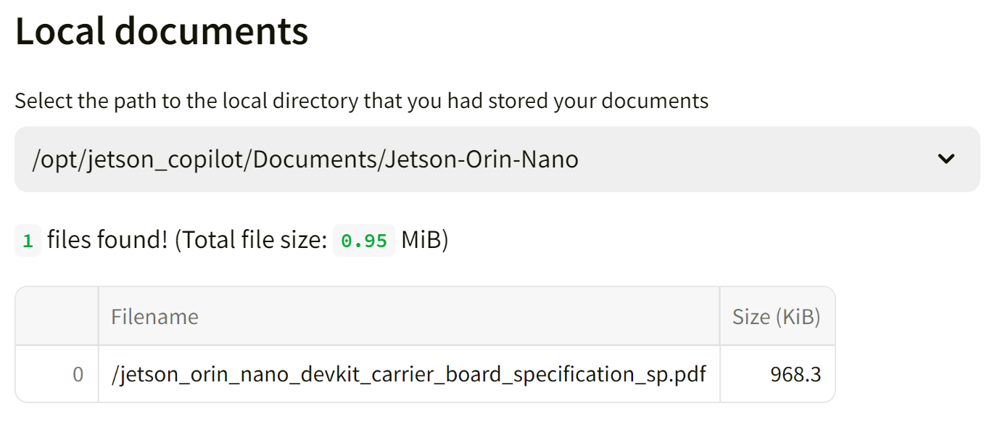

Tutorial - Jetson Copilot
Jetson Copilot is a reference application for a local AI assistant, which demonstrates;
- Running open-source LLMs (large language models) on device
- RAG (retrieval-augmented generation) to let LLM have access to your locally indexed knowledge
What you need
-
One of the following Jetson devices:
Jetson AGX Orin 64GB Developer Kit Jetson AGX Orin (32GB) Developer Kit Jetson Orin Nano 8GB Developer Kit
-
Running one of the following versions of JetPack:
JetPack 5 (L4T r35.x) JetPack 6 (L4T r36.x)
-
NVMe SSD highly recommended for storage speed and space
6 GBforjetragcontainer image- About
4 GBfor downloading some default models (llama3andmxbai-embed-large)
Info
To run Jetson Copilot, you do not need to have jetson-containers on your system. It uses the jetrag container image that is being managed and built on jetson-containers.
üèÉ Getting started
First time setup
If this is your first time to run Jetson Copilot on your Jetson, first run setup.sh to ensure you have all the necessary software installed and the environment set up.
git clone https://github.com/NVIDIA-AI-IOT/jetson-copilot/
cd jetson-copilot
./setup_environment.sh
It will install the following, if not yet.
- Chromium web browser
- Docker
How to start Jetson Copilot
cd jetson-copilot
./launch_jetson_copilot.sh
This will start a Docker container and start a Ollama server and Streamlit app inside the container. It will shows the URL on the console in order to access the web app hosted on your Jetson.
With your web browser on Jetson, open the Local URL (http://localhost:8501).
Or on a PC connected on the same network as on your Jetson, access the Network URL.
Local URL: http://localhost:8501
Network URL: http://10.110.50.252:8501
Info
You will need the Internet connection on Jetson when it launches for the first time, as it will pull the container image (and download the default LLM and embedding model when web UI starts for the first time).
When you access the web UI for the first time, it will dowload the default LLM (llama3) and the embedding model (mxbai-embed-large).
Tips
If you are on Ubuntu Desktop, a frameless Chromium window will pop up to access the web app, to make it look like an independent application. You need to close the window as stopping the container on the console won't shutdown Chromium.
üìñ How to use Jetson Copilot
0. Interact with the plain Llama3 (8b)
You can use Jetson Copilot just to interact with a LLM withut enabling RAG feature.
By default, Llama3 (8b) model is downloaded when running for the first time and use as the default LLM.
You will be surprized how much a model like Llama3 is capable, but may soon find limitations as it does not have information prior to its cutoff date nor know anything about your specific subject matter.
1. Ask Jetson related question using pre-built index
On the side panel, you can toggle "Use RAG" on to enable RAG pipeline.
The LLM will have an access to a custom knowledge/index that is selected under "Index".
As a sample, a pre-build index "_L4T_README" is provided.
This is built on all the README text files that supplied in the "L4T-README" folder on the Jetson desktop.
It is mounted as
/media/<USER_NAME>/L4T-README/once you executeudisksctl mount -b /dev/disk/by-label/L4T-README.
You can ask questions like:
What IP address does Jetson gets assigned when connected to a PC via a USB cable in USB Device Mode?
2. Build your own index based on your documents
You can build your own index based on your local and/or online documents.
First, on the console (or on the desktop) create a directory under Documents directory to store your documents.
cd jetson-copilot
mkdir Documents/Jetson-Orin-Nano
cd Documents/Jetson-Orin-Nano
wget https://developer.nvidia.com/downloads/assets/embedded/secure/jetson/orin_nano/docs/jetson_orin_nano_devkit_carrier_board_specification_sp.pdf
Now back on the web UI, open the side bar, toggle on "Use RAG", then click on "➕Build a new index" to jump to a "Build Index" page.
Give a name for the Index you are to build. (e.g. "JON Carrier Board")
Type in the field and hit Enter key, then it will check and show what path will be created for your index.
And then from the drop select box under "Local documents", select the directory you created and saved your documents in. (e.g. /opt/jetson_copilot/Documents/Jetson-Orin-Nano).
It will show the summary of files found in the selected directory.

If you want to rather only or additionally supply URLs for the online docuemnts to be ingested, fill the text area with one URL per a line.
You can skip this if you are building your index only based on your local documents.
Info
On the sidebar, make sure mxbai-embed-large is selected for the embedding model.
Use of OpenAI embedding models is not well supported and needs more testing.
Finally, hit "Build Index" button.
It will show the progress in the drop-down "status container", so you can check the status by clicking on it.
Once done, it will show the summary of your index and time it took.
You can go back to the home screen to now select the index you just built.
3. Test different LLM or Embedding model
TODO
üèóÔ∏è Development
Streamlit based web app is very easy to develop.
On web UI, at the top-right of the screen to choose "Always rerun" to automatically update your app every time you change the source codes.
See Streamlit Documentation for the detail.
Manually run streamlit app inside the container
In case you make more fundamental changes, you can also manually run streamlit app.
cd jetson-copilot
./launch_dev.sh
Once in container;
streamlit run app.py
üß± Directory structure
└── jetson-copilot
├── launch_jetson_copilot.sh
├── setup_environment.sh
├── Documents
│ └── your_abc_docs
├── Indexes
│ ├── _L4T_README
│ └── your_abc_index
├── logs
│ ├── container.log
│ └── ollama.log
├── ollama_models
└── Streamlit_app
├── app.py
├── build_index.py
└── download_model.py
Following directories inside the jetson-copilot directory are mounted in the Docker container.
| Directory Name | Description |
|---|---|
Docuemtns |
Directory to store your documents to be indexed |
Indexes |
Directory to store pre-built (or built-by-you) indexes for LLM to perform RAG on |
logs |
Directory for the app to store log files |
ollama_models |
Directory for the ollama server to store download models |
stremlit_app |
Directory for Python scripts to make up the web app |
üí´ Troubleshooting
If you find any issue, please check GitHub Issues of the Jetson Copilot repo.